Questão 1 · Diagnóstico · Inf ectologia · 4000164322Lactente com 1 ano e 8 meses de vida está em consulta de rotina em UBS, após ter mudado de cidade. Mãe relata que possui a infecção pelo vírus HIV, tendo descoberto no dia do parto da criança. Recebeu as medicações durante o parto e a criança tomou as medicações de prevenção da infecção, além de ter seguido todas as orientações dadas, tendo recebido medicação para bloquear o aleitamento. Realizou o acompanhamento médico da criança, mas acabou perdendo a última consulta. Possuía o resultado dos exames realizados pela criança: Exame 1: Quantificação da carga viral do HIV (idade: 1d) não detectável Exame 2: Quantificação da carga viral do HIV (idade: 1m15d): não detectável Exame 3: Quantificação da carga viral do HIV (idade: 3m15d) não detectável Você resolve solicitar um ELISA para HIV, último exame a ser feito pelo bebê exposto, tendo em vista que a criança já possui mais de 18 meses de vida e estava bem. O resultado deste exame é o seguinte: Elisa para Anti-HIV: Cut-off: 1,00 Título: 5,00 Resultado: REAGENTE Considerando as informações acima, qual a conduta adequada nesta situação?
A Orientar a mãe que a criança está infectada e iniciar tratamento precocemente.
B Solicitar Western Blot para confirmar a infecção da criança e planejar seguimento.
C Verificar a imunidade da criança e encaminhar para seguimento especializado.
D Repetir a sorologia após 1 mês, considerando possível resultado falso positivo.
Questão 2 · Critérios diagnósticos · Maturity Onset Diabetes of the Young MODY · 4000164321Durante a realização de exames pré-operatórios para uma cirurgia eletiva em uma adolescente com 13 anos de idade é detectada uma glicemia em jejum de 138 mg/dL. Esta paciente não apresenta poliúria, polidipsia ou perda de peso recente. Tem uma irmã com 8 anos hígida. A mãe tem 40 anos, é obesa, porém não tem diabete. O pai apresenta diabete melito diagnosticado aos 34 anos e em tratamento com sulfonilreia no presente. Esta paciente teve menarca há 2 anos e apresenta ciclos regulares. Sua estatura está no percentil 75, seu peso no percentil 50 e não apresenta lesões cutâneas. A avaliação laboratorial subsequente evidenciou: HbA1c = 6,7%; glicemia = 142 mg/dL; exame de urina rotina (EAS) = ausência de glicosúria, proteinúria e cetonúria; anticorpo anti-GAD = indetectável; anticorpo anti-ICA 5112 = indetectável. A conduta inicial mais indicada para esta paciente é?
A Iniciar dieta para diabéticos e realizar investigação genética.
B Iniciar dieta para diabéticos e tratamento com metformina.
C Realizar teste de tolerância oral à glicose.
D Iniciar dieta para diabéticos e tratamento com insulina.
Questão 3 · Doenças Esqueléticas · Pediatria · 4000164320Um paciente com 13 anos é avaliado por apresentar problemas no crescimento. Nasceu a termo, peso adequado para a idade gestacional, DNPM adequado, não tem histórico de doenças prolongadas, cirurgias ou uso prolongado de medicações. É o único lho. Seu pai mede 167 cm; sua mãe mede 145 cm e teve menarca aos 12 anos. Atualmente o paciente mede 140 cm (ver curva abaixo, onde estaturas anteriores são apresentadas), seu IMC está no percentil 25, sua envergadura é 134 cm, seu segmento inferior (púbis-pé) mede 66 cm, sua estatura sentado é de 84 cm e a relação estatura total pela estatura sentada é de 0,6. Encontra-se impúbere (G1P1). Sua idade óssea é de 12 anos. De acordo com os dados clínicos apresentados, a causa mais provável da baixa estatura deste paciente é?
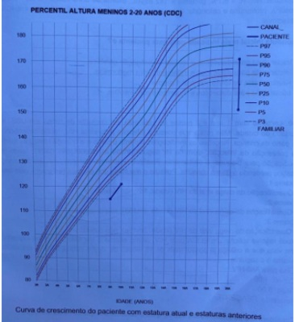
A Deficiência isolada de hormônio do crescimento.
B Hipopituitarismo.
C Displasia esquelética.
D Variante da normalidade: baixa estatura constitucional.
Questão 4 · Imunodef iciências primárias · Vacinas inativadas · Vacinas vivas atenuadas · 4000164319Lactente, 15 dias de vida, apresenta teste do pezinho ampliado com identi cação de imunode ciência combinada grave (SCID). A criança se encontra assintomática. Os pais estão muito preocupados com o diagnóstico e questionam sobre os cuidados que precisam ter com o filho. Com relação a vacinação, qual a sua orientação?
A Contraindicar as vacinas de vírus vivos atenuados sem restrições com relação às demais vacinas do calendário.
B A aplicação das vacinas apenas deverá ser adiada nas situações em que a criança apresentar alguma infecção ativa.
C Até que confirme o diagnóstico a criança pode receber as imunizações do calendário nacional sem restrições.
D Contraindicar todas as vacinas vivas atenuadas e orientar que seja feita a aplicação das demais vacinas do calendário.
Questão 5 · Def inição das síndromes talassêmicas · Diagnóstico dif erencial das anemias microcíticas · 4000164318Pré-escolar do sexo masculino, de 4 anos de idade, compareceu a consulta rotina de puericultura. Pais não relatavam queixas clínicas neste atendimento. Descrevem boa alimentação e bom desenvolvimento global. Peso e estatura ambos nos percentis 50 (P50) para idade e gênero. Pediatra observou mucosas levemente descoradas (+/4+) ao exame clínico, e sem outros achados de importância no exame físico. O paciente retorna hoje (1 semana após) para avaliação de resultado de exame hematológico solicitado na consulta prévia. Traz o seguinte laudo de exame hematimétrico: eritrócitos 5,55 milhões/mm³ (VN: 3,6 a 5,2); hemoglobina 10,40 g/dL (VN: 11 a 13,1 g/dL); hematócrito 32,10% ( VN: 35,0 - 43,0%); VCM 57,83 fL (VN: 74,0 a 102,0 fL); HCM 18,73 pg (VN: 23,0 a 31,0 pg); CHCM 32,39 g/dL (VN: 26,0 a 34,0 g/dL) RDW 13,6 % (VN: 11,5 a 14,5%). Série vermelha: microcitose e hipocromia discretas; ausência de anisocitose. Com base nos dados clínicos e laboratoriais apresentados, qual a alternativa que corresponde a melhor conduta a ser adotada para o caso?
A Solicitar exame de eletroforese de hemoglobina.
B Melhorar o aporte de ferro com alimentos ricos em ferro.
C Prescrever ferro elementar (4 mg/k/dia) por 3 meses.
D Pesquisar perda de sangue oculto nas fezes.
Questão 6 · Inf ecção de Trato Urinário ITU · Pediatria · 4000164317Em uma consulta de rotina a mãe refere que sua lha de 5 anos teve disúria e polaciúria, sem febre, por 3 dias, há 10 dias atrás. Foi atendida na UPA sendo solicitado exame de urina, que foi coletado por jato médio. Após avaliação do exame de urina tipo 1 foi prescrito sulfametoxazol + trimetoprima (SMZ+T) VO e marcado retorno em 2 dias para checagem do resultado de urocultura. A mãe refere que a criança está bem e que a sintomatologia desapareceu com 48 horas de tratamento medicamentoso. Por isso resolveu aguardar a consulta de puericultura para avaliação do resultado da cultura de urina. Antecedentes da criança: asma brônquica e constipação intestinal funcional. Nega quadro semelhante anteriormente. Exames trazidos pela mãe: - Urina tipo 1: densidade 1,012; pH 5, nitrito positivo, proteína 50 mg/L, leucócitos 200-250 por campo, hemácias 20-30 por campo; - Urocultura: 300.000 UFC/mL de E coli, sensível a sulfametoxazol + trimetoprima. Qual a conduta mais adequada para esse caso?
A Repetir exame de cultura de urina.
B Manter seguimento regular de puericultura.
C Pedir ultrassonografia de rins e de vias urinárias.
D Realizar cintilografia estática com DMSA.
Questão 7 · Curvas de Crescimento · Pediatria · 4000164316Os pais de um paciente com 10 anos de idade estão preocupados com a estatura e seu ganho de peso nos últimos 2 a 3 anos (ver dados nas curvas abaixo) e com o escurecimento importante da pele do pescoço e axilas, que no exame físico é confirmado ser acantose nigricans. No último ano ele já recebeu orientação da dieta hipocalórica, porém ainda ingere sucos industrializados, doces e guloseimas diariamente. Há cerca de três anos os pais se separaram e houve necessidade de mudança de escola e do círculo de amigos do paciente, em função de mudança de cidade. Mãe acha que o paciente se sente triste e isolado na escola, não participando das brincadeiras. Não pratica atividade física regular, pois está referindo car muito cansado. Passa a maior tempo fora da escola dentro do apartamento e gosta muito de jogos eletrônicos. Mãe refere que ela também ganhou peso excessivamente nos últimos anos. Para a consulta atual traz exames recentes que evidenciaram: glicemia = 97 mg/dL; HBA1c = 6,2%; colesterol total = 233 mg/dL; colesterol HDL = 38 mg/dL; triglicérides = 206 mg/dL. Considerando os dados apresentados, qual a conduta mais indicada para este paciente, neste momento?
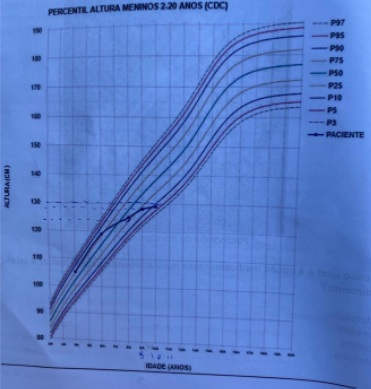
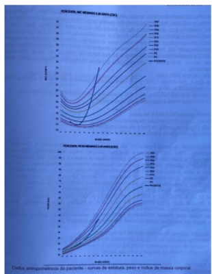
A Orientar dieta equilibrada normocalórica e realização de 60 minutos diários de atividade física leve.
B Realizar investigação bioquímica adicional buscando a causa do ganho de peso, antes de qualquer medida terapêutica.
C Orientar dieta equilibrada normocalórica e realização de 60 minutos diários de atividade física moderada a intensa.
D Orientar dieta equilibrada com leve restrição calórica, realização de 60 minutos diários de atividade física moderada a intensa e iniciar tratamento com metformina.
Questão 8 · Agentes Intravenosos · Cirurgia · 4000164315Menino, 6 anos de idade, apresentou queda da própria altura sobre o membro superior esquerdo, evoluindo com dor e edema no cotovelo. Realizada radiogra a ilustrada na figura abaixo que evidenciou luxação do cotovelo esquerdo. Mãe refere que criança tem asma, mas que está controlada com uso de beclometasona via inalatória. Nega internações prévias e última refeição foi há 8 horas. Neste caso qual é a opção medicamentosa mais adequada para preparar a criança para o procedimento?
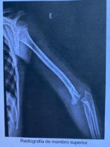
A Midazolam.
B Clonidina.
C Propofol.
D Cetamina.
Questão 9 · Cardiopediatria e Cardiopatias congênitas · Pediatria · 4000164314Menina de 4 anos é trazida para consulta em unidade básica de saúde. Pais percebem que criança respira rápido e forte durante as atividades físicas e para de brincar com pouco tempo de exercícios. Durante o exame físico observa-se: bom estado geral, corada, hidratada, acianótica (sat O₂ 96% em membro superior esquerdo). Aparelho respiratório: murmúrio vesicular audível difusamente, sem ruídos adventícios, sem esforço, FR: 20 irpm. Aparelho cardiovascular: ritmo regular com 2 bulhas normofonéticas, sem sopros audíveis, FC: 90 bpm; pulsos cheios em membros superiores e de difícil palpação em membros inferiores. Abdome ácido, indolor e sem massas palpáveis; extremidades sem edema, mãos aquecidas e pés frios. Considerando a principal hipótese diagnóstica, qual seria a complicação mais frequente?
A Hipertensão arterial sistêmica.
B Enterocolite necrotizante.
C Crise asmática grave.
D Sindrome de Eisenmenger.
Questão 10 · Diarreia Crônica · 4000164313Menina, 2 anos, apresenta quadro de diarreia, sem muco ou sangue, 3 vezes ao dia, aumento de volume abdominal e dé cit pondero-estatural há cerca de 1 ano. Concomitantemente apresenta edema de membros inferiores, mais acentuado à direita, que segundo a mãe, surgiu desde o nascimento. Mantém bom apetite, família de classe média Nega outras comorbidades. Pais hígidos, sem história de consanguinidade. Exames laboratoriais: Albumina = 2,0 g/dL (Valor de referência 3,0 a 4,8 g/dL); Hemograma: Hb = 10,0 g/dL; GB = 7000 (linfócitos <2 x 109/L = linfopenia), plaquetas normais; Gama-globulina = 0,3 g/dL (valor de referência 0,6 a 1,79); Urina rotina normal; Ureia e creatina normais. Alfa-1-Antitripsina fecal = 0,9 mg/g fezes (valor de referência <0,30); Esteatócrito = 5% (VR <2). Qual a principal hipótese diagnóstica para esta criança?
A Deficiência congênita de IgA.
B Linfangiectasia intestinal.
C Deficiência de alfa-1-antripsina.
D Fibrose cística.
Questão 11 · Pediatria · Diagnóstico · 4000164312Menino de 5 anos é trazido à consulta de puericultura sem queixas. Peso: 19 kg (P50), altura: 109 cm, PA: 106 x 64 mmHg (repetida e confirmada), restante do exame físico sem alterações. Consultando a tabela abaixo, como se classifica a pressão aferida nesta consulta?
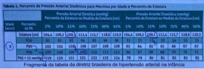
A Pressão arterial elevada.
B Hipertensão estágio 2.
C Hipertensão estágio 1.
D Pressão arterial normal.
Questão 12 · Miopatias autoimunes sistêmicas juvenis · Dermatomiosite · 4000164311Mãe refere que seu lho de 8 anos está apresentando quedas frequentes ao solo há 3 semanas. Refere di culdades em subir escadas e de se levantar da posição sentada, necessitando de ajuda. Criança está deprimida e irritada. Ao exame físico você nota sua pele avermelhada (foto abaixo), di culdade de manter os braços elevados e de subir a escada para sentar-se na maca. Qual a hipótese diagnóstica principal?
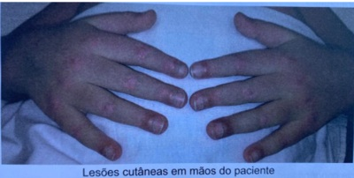
A Dermatomiosite juvenil.
B Síndrome de Guillain-Barré.
C Lupus eritematoso sistêmico juvenil.
D Miosite viral.
Questão 13 · Imunodef iciências do sistema complemento · 4000164310Menino com 4 anos, foi atendido no pronto atendimento com febre, cefaleia, queda do estado geral e vômitos, iniciados há 1 dia. Internado para investigação. Pais relatam que a criança já apresentou dois episódios prévios de meningite (aos 12 e 18 meses de vida), ambos confirmados por cultura de líquor como sendo meningocócicas, requerendo internação hospitalar e tratamento com antibiótico endovenoso. Ao exame: TA 39°C; prostração; FC 140 bpm; FR 50 mrpm; demais aspectos do exame físico normais. Exames laboratoriais: Hemograma: Hb 11,7 Ht 34% GB 15.900 Neutró los 14.110 (20% de bastonetes, 80% segmentados) Plaquetas 345.000. Liquor: aspecto turvo, proteínas aumentadas, glicose consumida, presença de células em grande quantidade e cocos gram negativos. Qual a hipótese diagnóstica mais provável?
A Deficiência do sistema complemento.
B Agamaglobulinemia congênita.
C Doença granulomatosa crônica.
D Imunodeficiência combinada grave.
Questão 14 · Pediatria · Doença hemolítica ABO · Hiperbilirrubinemia não f isiológica · 4000164309Recém-nascido (RN) do sexo masculino, nascido de parto normal com 38 semanas de gestação, pesando 2900g. Apgar 7/9. Mãe de 30 anos, G2P2A0, sem comorbidades, recebeu imunoglobulina anti-D com 28 semanas de gestação; tem história de que o lho anterior recebeu fototerapia ao nascimento. Doze horas após o nascimento, a mãe se queixou que não tinha produção láctea, e que o RN estava sonolento e não sugava o seio. No exame físico, o RN estava em bom estado geral, sonolento, reativo à manipulação, com tônus preservado e reflexos primitivos presentes. Apresentava cefalohematoma parietal à direita, icterícia em face e tronco, sem outras anormalidades no exame físico. Foram realizados os seguintes exames: Tipo sanguíneo da mãe: O negativo, Coombs indireto negativo; Tipo sanguíneo do RN: A positivo, Coombs direto negativo; Glicemia capilar 58 mg/dl; Sódio 138,2 mmol/L; Bilirrubina total 8 mg/dL, bilirrubina direta 0,24 mg/dl; Hemoglobina total 17,0 g/dL, hematócrito 52%. O RN foi colocado em fototerapia. Qual a causa mais provável de icterícia neste paciente?
A Oferta inadequada de leite materno.
B Incompatibilidade RH.
C Incompatibilidade ABO.
D Secundária à absorção de cefalohematoma.
Questão 15 · Tratamento · 4000164308Paciente de 4 anos de idade, vítima de picada por escorpião, chega à sala de emergência pediátrica uma hora após o acidente apresentando sudorese profusa, piloereção, vômitos incoercíveis, frequência cardíaca 150 bpm, frequência respiratória 40 ipm, pressão arterial 85/50 mmHg, pulsos centrais nos e tempo de enchimento capilar 5 segundos. À ausculta pulmonar, há estertores nos difusos e a saturação periférica de oxigênio (SpO₂) é de 90% em ar ambiente. Logo após a admissão, é colocado coxim abaixo do occipício, feita aspiração de vias aéreas superiores, administrado oxigênio por máscara não reinalante e administradas 6 ampolas de soro antiescorpiónico via endovenosa. A SpO₂ após início da oxigenoterapia é de 94%, mas o quadro hemodinâmico se mantém inalterado. O próximo passo do tratamento é iniciar por infusão EV continua:
A Norepinefrina.
B Dobutamina.
C Epinefrina.
D Vasopressina.
Questão 16 · Reanimação neonatal · Recepção do neonato com boa vitalidade · 4000164307Em relação à avaliação da vitalidade imediatamente após o nascimento, quando o neonato ainda está ligado ao cordão, ainda em campo obstétrico. Qual dos critérios abaixo indica que o paciente deve ser levado imediatamente ao berço para avaliação da necessidade de ressuscitação?
A Cianose.
B Frequência cardíaca diminuída.
C Frequência respiratória aumentada ou diminuída.
D Hipotonia.
Questão 17 · Tratamento da síndrome hemolítico urêmica SHU · Quadro clínico da síndrome hemolítico urêmica SHU · 4000164306Criança eutró ca, da raça negra, com 9 meses de idade e quadro de diarreia com sangue há 5 dias. Está fazendo uso de ceftriaxona IM há 4 dias. Mãe refere que apesar da melhora da diarreia a criança está urinando menos, com edema palpebral discreto e está mais irritada há 1 dia. Exame físico: criança hidratada, pálida +++/4+; edema palpebral bilateral, FR 40 ipm FC 140 bpm, 2 bulhas rítmicas e normofonéticas com sopro sistólico suave, PA 120 x 80 mmHg. Exames colhidos no pronto socorro. Hemograma: Hb 6,0 g/dL, Ht 17,9 %, GB 18.500 e plaquetas 75.000. Reticulocitose. Ureia 70 e creatinina 2,5 mg/DI. Urina tipo 1: densidade 1,012; pH 5,5; proteinuria ++, leucócitos 10 por campo e hemácias 15 por campo de grande aumento. Com relação a anemia, qual o tratamento mais indicado nesse momento?
A Eritropoetina subcutânea.
B Reposição de ferro.
C Corticoterapia.
D Concentrado de hemácias.
Revisar: possível letra faltando em enunciado
Questão 18 · Tratamento · Pediatria · 4000164305Lactente de 1 ano de idade, apresenta diarreia há 6 meses, caracterizada por fezes líquidas, moderada quantidade, 4 vezes por dia, odor fétido, distensão abdominal, sem sangue ou muco. Mãe refere que simultaneamente apresenta di culdade de ganho de peso e de estatura. Os exames laboratoriais revelaram: Hemoglobina = 9,0 g/dl; Albumina = 2,5 g/dL (valor de referência 2,9 a 4,8 g/dL); Anti-tranglutaminase IgA = positivo; Dosagem de imunoglobulinas: IgA = normal para a idade. Para esta criança, além do trigo, qual outro componente você excluiria da dieta?
A Linhaça e aveia.
B Tapioca e polvilho.
C Maisena e trigo de sarraceno.
D Centeio e cevada.
Questão 19 · Tumores Sólidos Abdominais da Inf ância · Cirurgia · 4000164304Criança de 2 anos e 11 meses de idade é trazida a consulta de puericultura pela mãe. Relata que ela percebeu caroço na barriga (sic) ao dar banho na criança, há 1 semana. Diz também que há cerca de um mês criança tem queixado-se de dores abdominais em cólica, quase que diárias, de curta duração e resolução espontânea. Criança permanece bem, sem queda do estado geral, sem alterações do apetite ou das atividades diárias. Pais negam queixas digestivas ou gênito-urinárias. Não há história de constipação intestinal. Ao exame físico a criança apresentava-se em bom estado geral, afebril, corada, eupneica, com massa palpável no flanco direito, endurecida, fixa, indolor, medindo aproximadamente 8 cm no seu maior eixo. Com base nos achados acima descritos, qual a hipótese diagnóstica mais provável para este caso?
A Tumor de Wilms.
B Neuroblastoma.
C Hepatoblastoma.
D Linfoma não-Hodgkin.
Questão 20 · Crises de Início Generalizado · Neurologia · Crises Epilépticas · 4000164303Uma menina de quatro anos, previamente hígida, foi atendida em pronto atendimento com crise epiléptica do tipo tônico- clônico generalizada, com duração inferior a um minuto, em vigência de febre aferida em 39°C. Encontrava-se em tratamento de infecção de via aérea superior há 2 dias. Havia relato de crise febril no irmão mais velho. À família foi pontuada a principal hipótese diagnóstica e foram esclarecidos riscos para recorrência de evento similar. Qual dos fatores abaixo se apresenta como risco de recorrência nesse caso clínico?
A Pico de temperatura elevado.
B Intervalo curto entre doença febril e evento.
C Idade precoce para o primeiro evento.
D História familiar de crise febril.
Questão 21 · Indicações de cateterismo · Cardiologia · 4000164302Homem, 67 anos, hipertenso, diabético tipo 2, dislipidêmico, obeso e tabagista ativo. Previamente assintomático, procura atendimento médico devido a quadro de dor torácica, em queimação, de intensidade 5/10, sem irradiação ou outros sintomas associados e que se inicia após realização de moderados esforços. Refere início da dor há 2 semanas, sendo que há 1 semana tem sido mais frequente e de maior intensidade. Exame físico: sem alterações significativas. Eletrocardiograma abaixo. Qual é o método de avaliação mais indicado para investigação do quadro clínico?
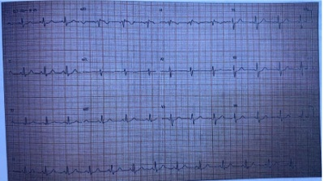
A Angiotomografia de coronária.
B Cintilografia miocárdica com dipiridamol.
C Cateterismo cardíaco.
D Teste ergométrico.
Questão 22 · Clínica Médica · Hepatologia · Icterícia não Obstrutiva · 4000164301Homem, 72 anos, relata olhos e pele amarelos há duas semanas, acompanhados de prurido cutâneo difuso, principalmente à noite. Sem outros sintomas. Alguns dias antes do início do quadro, percebeu sua urina mais escura. Não observou as características das fezes. Exame físico: ictérico, com escoriações no tronco e nos membros. Sem outras alterações. Qual é a alteração do metabolismo da bilirrubina mais provável?
A Deficiência de produção da fração conjugada.
B Deficiência da captação da fração indireta.
C Prejuízo da excreção da fração conjugada.
D Aumento da produção da fração indireta.
Questão 23 · Def inição · Nef rologia · 4000164300Homem, 65 anos, hipertenso há 30 anos, refere poliúria, sem outras queixas. Monitorização Ambulatorial da Pressão Arterial com valor médio de PA = 170 x 100 mmHg, em uso de anlodipina, carvedilol e furosemida. Exame físico sem alterações. Ultra-sonogra a: rins de dimensões reduzidas, 7,5 cm na maior dimensão bilateralmente, com perda da diferenciação entre córtex e medula. Considerando o diagnóstico sindrômico renal, quais parâmetros são utilizados para o estadiamento?
A Creatinina plasmática e urina rotina.
B Relação ureia/creatinina plasmática e fração de excreção de sódio.
C Proteinúria de 24hs e clearance de creatinina.
D Taxa de filtração glomerular e relação albumina/creatinina urinária.
Questão 24 · Gota · 4000164299Homem, 48 anos, tabagista e etilista, há 20 anos apresenta dor articular. O quadro teve início nos membros inferiores e ocorria como surto-remissão. Após alguns anos, os membros superiores foram acometidos, quando passou a ter sintomas articulares persistentes. Exame físico: BEG, corado. Edema, calor, dor e limitação de movimentos em tornozelos, joelhos, punhos e metacarpofalangeanas. Foto de sua mão esquerda é mostrada abaixo. De qual alteração fisiopatológica resultam as lesões?
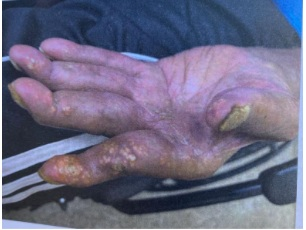
A Calcificação de tecidos moles.
B Necrose caseosa da derme.
C Coleções de pus na derme.
D Depósito subcutâneo de cristais.
Questão 25 · Artrite reumatoide AR · 4000164298Mulher, 52 anos, há três anos tem o diagnóstico de artrite reumatoide, cujo tratamento não atingiu remissão da in amação articular, a despeito do uso de diversos esquemas terapêuticos. Ao exame: hipotro a de musculatura intrínseca das mãos, com edema de punhos, desvio ulnar dos quirodáctilos e hiperextensão de interfalangeanas proximais das mãos. Na radiografia das mãos, qual é a alteração esperada nas articulações acometidas?
A Calcificação periarticular.
B Esclerose óssea subcondral.
C Erosões ósseas justa-articulares.
D Osteófitos marginais.
Questão 26 · Exacerbação Aguda da DPOC EADPOC · Pneumologia · 4000164297Mulher, 72 anos, tabagista (80 anos-maço), refere dispneia progressiva e tosse com expectoração amarelada pela manhã há 10 anos. Há 4 dias com aumento do volume de expectoração (que se tornou mais escura) e piora da dispneia. Exame físico: REG, consciente, Glasgow 15. Ausculta respiratória: murmúrio vesicular reduzido bilateralmente, com sibilos difusos. FR: 30 ipm. FC: 110 bpm; PA: 112 x 72 mmHg. Gasometria arterial em ar ambiente pH: 7,28; pO₂: 50 mmHg: pCO₂: 54 mmHg; HCO₃: 28 mEq/L; saturação O₂: 84%. Qual intervenção mais adequada neste momento?
A Intubação e ventilação mecânica.
B Ventilação não-invasiva.
C Cateter nasal de alto fluxo.
D Máscara de Venturi.
Questão 27 · Síndrome nef rótica · Nef rologia · 4000164296Mulher, 60 anos, procura atendimento por ganho de peso (10kg), urina espumosa e edema, em face e extremidades nos últimos 3 meses. Exame físico: BEG, corada, hidratada, eupneica, afebril. Edema 4+/4+. PA = 106 x 70 mmHg, sem outras alterações. Exames laboratoriais: creatinina = 0,7 mg/dL; ureia = 30 mg/dL; sódio = 131 mmol/L; potássio = 4,2 mmol/L; albumina = 2,1 g/dL; proteinúria = 6.500 mg/24h. Qual achado mais provável na urina, além de proteína?
A Cilindros granulosos.
B Lipídios.
C Leucócitos.
D Cilindros eritrocitários.
Questão 28 · Lúpus Eritematoso Sistêmico LES · 4000164295Mulher, 20 anos, queixa-se de fadiga e queda de cabelos, iniciadas há dois meses. Refere dor em articulações das mãos e nos punhos. Exame físico: BEG, corada, eupneica; edema, calor e dor à palpação de punhos e segunda a quarta metacarpofalangeanas de ambas as mãos; lesões numulares com bordas hipercrômicas e centro eritematoso e atró co na fronte. Foto da oroscopia abaixo. Qual alteração mais provável no hemograma da paciente?

A Monocitose.
B Plaquetose.
C Linfopenia.
D Hipocromia.
Revisar: possível letra faltando em enunciado
Questão 29 · Clínica Médica · Hepatologia · Colestase · 4000164294Homem, 52 anos, apresenta fadiga e icterícia progressiva nos últimos 15 dias. Etilista há mais de 10 anos (90g de álcool/dia), com última ingestão alcoólica na véspera do início dos sintomas. Exame físico: ictérico, presença de aranhas vasculares no tórax e sinal do semicirculo de Skoda. Laboratorio: bilirrubina total: 16 mg/dL (VR ≤1,2), bilirrubina direta: 12 mg/dL (VR ≤0,8) AST: 105 U/L (VR ≤32); ALT: 48 U/L (VR ≤38); gama-GT: 280 U/L (VR ≤70); INR: 1,6. Investigação laboratorial do quadro descartou etiologias viral, autoimune, metabólica e tóxica por medicamento. Qual é a conduta inicial mais adequada?
A Endoscopia digestiva alta para avaliação de hipertensão portal.
B Elastografia hepática para avaliação de fibrose.
C Dosagem sérica de alfafetoproteína para avaliação de neoplasia.
D Ultrassonografia de abdome para avaliação das vias biliares
Questão 30 · Tinea corporis · 4000164293Homem, 44 anos, portador de diabetes mellitus tipo 2 há 5 anos, em insulinoterapia, sem outras comorbidades. Há 2 meses, relata aparecimento da lesão no antebraço com prurido associado ( figura). Baseado na principal hipótese diagnóstica, realizou-se um exame complementar. Qual é o achado mais provável?

A Dermatite psoriasiforme.
B Elevação da imunoglobulina E.
C Hifas septadas ramificadas.
D Epidermotropismo de linfócitos.
Questão 31 · Pericardite constritiva · 4000164292Mulher, 25 anos, sem comorbidades, relata dispneia progressiva, atualmente classe funcional III da NYHA, associada a palpitações taquicárdicas aos esforços. Exame físico: FC = 85 bpm, PA = 112 x 70 mmHg, FR = 18 irpm, elevação do pulso venoso jugular na inspiração, hepatomegalia com ascite moderada e edema 1+/4+ de membros inferiores. Radiogra a de tórax (PA) e eletrocardiograma abaixo. Qual é a principal hipótese diagnóstica?
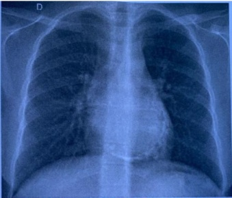
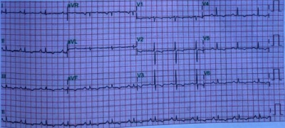
A Endomiocardiofibrose.
B Pericardite constritiva.
C Tamponamento cardíaco.
D Amiloidose cardíaca.
Questão 32 · Manif estações clínicas · 4000164291Homem, 20 anos, trabalhador rural, sofreu acidente no tornozelo esquerdo, por animal não visualizado. Queixa-se de pouca dor no tornozelo esquerdo, mialgia difusa e dificuldade para deglutir. Apresenta alteração da coloração da urina (foto). Qual é a alteração clínica/laboratorial esperada?
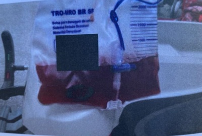
A Troponina elevada.
B Rinorreia.
C Hipercalcemia.
D Diplopia.
Questão 33 · Doença Pulmonar Obstrutiva Crônica DPOC · Introdução à Pneumologia · Pneumologia · 4000164290Homem, 72 anos, tabagista. Refere dispneia progressiva (atualmente a mínimos esforços) e tosse seca esporádica há 2 anos. Exame físico: BEG, corado, cianótico, com baqueteamento digital. FR: 28 ipm. Sat O₂: 87% em ar ambiente. Qual ruído adventício mais provável na ausculta respiratória?
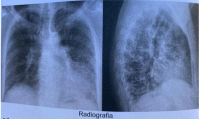
A Estertor em velcro.
B Grasnido.
C Estertor grosso.
D Ronco.
Questão 34 · Diagnóstico · 4000164289Homem, 42 anos, há 5 meses com tosse produtiva, febre esporádica e dispneia progressiva, atualmente aos médios esforços. Concomitantemente, apresenta lesão úlcero-vegetante, dolorosa, de crescimento progressivo, com pontilhado hemorrágico em gengiva. Antecedentes pessoais: agricultor em fazenda de café. Nega tabagismo e etilismo. Nega contato com sintomáticos respiratórios. Radiografia de tórax com infiltrado intersticial peri-hilar simétrico. Considerando a principal hipótese diagnóstica, qual é o achado mais provável no exame do escarro do paciente?
A Hifas septadas finas com macroconídios tuberculados e microconídios de parede lisa.
B Hifas finas de ramificação septada, com conídios em grupos em forma de margarida.
C Leveduras em brotamento rodeadas de halo transparente na coloração com nanquim.
D Leveduras grandes de parede celular birrefringente, com brotamentos em roda de leme.
Questão 35 · Quadro clínico da anemia megaloblástica · 4000164288Homem, 76 anos, refere "pele amarelada", parestesia progressiva em membros inferiores e ardência na língua (Figura 1). Faz uso de metformina, para diabetes mellitus tipo 2, e omeprazol para gastrite. Nega alteração do hábito intestinal e mantém ingesta alimentar sem restrições. Exames laboratoriais: hemograma: Hb: 8,8 g/dL, Ht: 26%, VCM: 112 fL (VN: 80-95 fL), leucócitos: 3.200/ul, plaquetas: 124.000/uL (esfregaço na Figura 2); Contagem absoluta de reticulócitos: 23.000/uL (VN: 25.000-105.000/uL); ferro sérico: 96 ug /dL (VN: 40-160 ug/dL); TIBC: 320 ug/dL (VN: 300-360 ug/dL); saturação da transferrina: 30%; ferritina: 118 ng/mL (VN: 6-159 ng/mL); LDH: 5.460 U/L (VN < 460 U/L); bilirrubinas totais: 1,8 mg/dL (VN <1,0 mg/dL); Coombs direto: negativo; TSH: 4,0 mU/L (VN: 0,5 -5,0 mU/L). Qual é a etiologia mais provável das alterações clínico-laboratoriais?
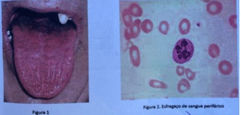
A Deficiência de vitamina B12.
B Deficiência de ferro.
C Doença autoimune.
D Hipotireoidismo.
Questão 36 · Saúde do Idoso geriatria · Antipsicóticos · Estado Conf usional Agudo Delirium · 4000164287Mulher, 85 anos, portadora de síndrome da fragilidade e hipertensão arterial sistêmica. Interna devido a pneumonia e evolui, no segundo dia de internação, com agitação e confusão mental. Ao exame físico: REG, confusa, desidratada 1+/4+. PA: 149 x 68 mmHg, FC 92 bpm, FR: 18 irpm, satO₂: 94% com cateter nasal a 2 L/min. Ausculta pulmonar: MV presente, com roncos de transmissão difusos. Ausculta cardíaca sem alterações. Abdome doloroso à palpação difusa, sem massas ou visceromegalias palpáveis. Em relação à alteração comportamental, qual é o tratamento medicamentoso mais adequado?
A Diazepam.
B Clorpromazina.
C Clonazepam.
D Haloperidol
Questão 37 · Rastreio da retinopatia diabética · 4000164286Mulher, 52 anos, com hipertensão e diabetes tipo 2 há 4 anos, relata que ultimamente vem urinando mais, com surgimento definictúria no último mês. Refere di culdade para aderir a dieta e exercício físico regularmente. Está em uso de losartana, metformina e gliclazida. Exame físico sem alterações. Glicemia de jejum: 246 mg/dL, hemoglobina glicada: 8,9% (VR: 4,3- 6,1); funções hepática e renal normais. Qual exame mais adequado para rastreio de complicação crônica do diabetes neste momento?
A Ultrassonografia de rins.
B Fundo de olho.
C Gasometria venosa.
D Lipidograma.
Questão 38 · Crise adrenal · 4000164285Mulher, 32 anos, relata fraqueza, indisposição, emagrecimento, náuseas e vômitos há 6 meses. Refere também ciclos menstruais irregulares, sendo a data da última menstruação há 3 meses. Ao exame físico: PA = 100 x 60 mmHg em decúbito e 80 x 50 mmHg em ortostase escurecimento de pele e rarefação de pelos pubianos. Considerando a hipótese clínica mais provável, qual é o tratamento?
A Estrógeno e progestágeno.
B Levotiroxina.
C Cabergolina.
D Prednisona e fludrocortisona.
Questão 39 · Dermatologia · Manif estações clínicas · 4000164284Homem, 61 anos, relata lesão na língua há 3 anos ( figura), com di culdade de alimentação e perda de peso. Etilista de 6 garrafas de cerveja por semana e nega tabagismo. Ao exame: BEG, corado. Linfonodo submandibular à esquerda de 0,5 cm, móvel e indolor. Cicatriz de aspecto apergaminhado no dorso do pé direito. Anatomopatológico da lesão da língua: epitélio com hiperplasia pseudoepiteliomatosa; in ltrado na submucosa denso e misto, rico em plasmócitos, com esboço de formação de granulomas. Não foram visualizados parasitas nas colorações especiais (GMS, Giemsa e Ziehl-Neelsen) e as culturas da lesão foram negativas. Qual é o diagnóstico mais provável?

A Carcinoma espinocelular.
B Paracoccidioidomicose.
C Doença de Behçet.
D Leishmaniose mucosa.
Questão 40 · Estenose aórtica · 4000164283Homem, 80 anos, tabagista e hipertenso, é internado por dor precordial aos pequenos esforços e um episódio de síncope enquanto caminhava dentro de casa. Exame sico: FC = 85 bpm, PA = 115 x 80 mmHg, pulso carotídeo com ascenso lento e baixa amplitude, ritmo cardíaco regular em 2 tempos, ictus cordis com 2 polpas digitais, sopro sistólico rude com pico tardio em foco aórtico, sopro mitral piante e desdobramento paradoxal da segunda bulha, sem outras alterações. Qual é a principal hipótese diagnóstica?
A Insuficiência mitral.
B Estenose aórtica.
C Estenose mitral.
D Estenose pulmonar.
Questão 41 · Tratamento · Ginecologia · 4000164282Mulher, 84 anos, G4P4A0 (4PN), DUM: há 37 anos. Paciente refere que há 12 anos iniciou com frouxidão vaginal e que há 6 meses tem notado abaulamento em região perineal que tem incomodado e atrapalha sua vida cotidiana e sexual. Tem HAS, diabetes e dislipidemia sem controle adequado com medicação. Antecedente pessoal de infarto agudo do miocárdio há 7 anos. Exame físico: regular estado geral, IMC: 32,2 Kg/m2, exame ginecológico abaixo. Qual a melhor conduta neste momento?
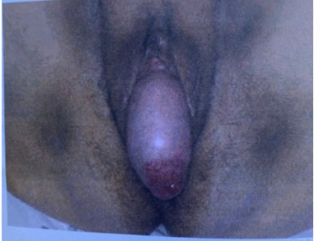
A Colporrafia anterior e posterior.
B Uso de pessario vaginal.
C Histerectomia total vaginal.
D Colpocleise a LeFort.
Questão 42 · Descarga papilar · 4000164281Mulher, 54 anos, menopausada, tem observado saída de secreção escura (marrom-esverdeada) por vários ductos das papilas mamárias bilateralmente, há cerca de seis meses. Nega qualquer antecedente pessoal ou familiar de doença mamária. Não é tabagista e o exame clínico das mamas é normal, exceto por descarga papilar bilateral, com secreção fluida, escura, por vários ductos. A mamografia recente mostra BIRADS 2. Qual o diagnóstico mais provável?
A Abscesso subareolar.
B Ectasia ductal.
C Papiloma intra-ductal.
D Carcinoma "in situ".
Questão 43 · OginoKnaus · 4000164280Mulher, 23 anos, saudável, G1P1, com ciclo menstrual variando de 24-33 dias nos últimos 6 meses. O volume menstrual é normal e a duração do sangramento é de 4 a 5 dias. Após as orientações, ela optou pelo uso da tabelinha. Considerando que você usou o método do calendário (ou ritmo) para seus cálculos (Organização Mundial da Saúde, 2018), qual a alternativa contém o período do ciclo menstrual que essa mulher deverá fazer abstinência ou usar preservativo para evitar uma gravidez?
A 7° ao 23° dia do ciclo.
B 5° ao 24° dia do ciclo.
C 8° ao 19° dia do ciclo.
D 6° ao 22° dia do ciclo.
Questão 44 · Quadro clínico · Tratamento das mulheres que desejam engravidar · Diagnóstico · 4000164279Nuligesta, 28 anos, deseja engravidar. Refere relações sexuais 3 vezes por semana, sem uso de métodos contraceptivos, há 2 anos. Ciclos menstruais com intervalos variados, geralmente superiores a 45 dias, 6 a 10 dias de duração e uxo normal. Refere acne e aumento de pili cação após suspender o uso de anticoncepcional combinado oral. Esposo de 30 anos, saudável. Ao exame físico: acne em face, abdome e região dorsal. Peso = 68 Kg; altura = 1,66 m; IMC = 24,7 Kg/m²; cintura = 83 cm; Ferriman = 6. Exame ginecológico sem alterações. Exames laboratoriais do casal: normais Qual a melhor conduta?
A Indução da ovulação com clomifeno para inseminação intrauterina.
B Estimulação ovariana com gonadotrofinas para fertilização in vitro.
C Cirurgia laparoscópica ovariana para coito natural.
D Indução da ovulação com letrozol para coito programado.
Questão 45 · Sangramento primeira metade · 4000164278Mulher, 21 anos, G1P0A1, submetida a vácuo-aspiração com diagnóstico histopatológico de mola hidatiforme completa. Recebeu implante de etonogestrel logo após a aspiração. O exame ginecológico não evidencia alterações. A curva de evolução do hCG está apresentada na imagem abaixo. Qual a melhor conduta?
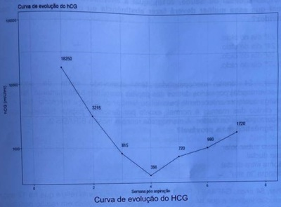
A Iniciar metotrexato.
B Refazer a vácuo aspiração.
C Indicar histerectomia.
D Manter a observação clínica.
Questão 46 · Interpretação e conduta f rente as atipias citológicas · 4000164277Mulher, 32 anos, G1P1, usuária de implante de etonogestrel, vivendo com HIV há 5 anos em uso de terapia antirretroviral com carga viral abaixo do limite de detecção e contagem de linfócitos TCD4 de 350 células/mm³. Resultado da colpocitologia coletada há 1 mês: amostra satisfatória, epitélio escamoso glandular e células compatíveis com lesão intraepitelial de baixo grau. De acordo com as Diretrizes Brasileiras do Instituto Nacional do Câncer (2016), qual melhor conduta?
A Realizar colposcopia imediatamente.
B Coletar biologia molecular.
C Repetir a citologia em seis meses.
D Realizar tratamento excisional.
Questão 47 · Diagnóstico · Ginecologia · Etiologia · 4000164276Menina, 14 anos, menarca há 2 anos, apresentando ciclos menstruais normais, queixa-se de aumento do volume abdominal há 2 meses. Ao exame clínico abdominal identi ca-se uma massa estendendo-se da pelve à cicatriz umbilical. A ultrassonogra a confirma a presença de uma massa predominantemente sólida ocupando a pelve, não há ascite ou alterações em abdome superior. As dosagens de marcadores tumorais mostram CA 125 com valor normal e alfafetoproteína com valor elevado. Qual é a hipótese diagnóstica mais provável?
A Endometrioma ovariano.
B Leiomioma uterino.
C Tumor de células germinativas do ovário.
D Tumor epitelial maligno do ovário.
Revisar: possível letra faltando em enunciado
Questão 48 · Dor pélvica crônica · Síndrome Miof ascial · 4000164275Mulher, 38 anos, G4P3A1 (3PC), DUM: há 10 dias. Encaminhada ao ambulatório de ginecologia por dor em fossa ilíaca esquerda tipo pontada e em queimação há 5 meses. Durante exame físico identi cado ponto doloroso nesta região de moderada intensidade com irradiação para face medial da coxa, sem outras alterações, IMC = 20,1 Kg/m². Qual a hipótese diagnóstica mais provável?
A Granuloma por corpo estranho.
B Neuroma de parede abdominal.
C Endometrioma de parede.
D Síndrome miofascial abdominal
Revisar: possível letra faltando em enunciado
Questão 49 · Ginecologia · Tratamento · 4000164274Nuligesta, 26 anos, vem ao pronto atendimento queixando de corrimento fétido há 10 dias e dor no baixo ventre há sete dias. Nega febre, vómitos ou diarreia. Usa dispositivo intrauterino (DIU) de cobre há um ano. Ao exame, observa-se conteúdo vaginal de coloração esverdeada e odor fétido, dor a palpação profunda de hipogástrio e ao toque vaginal apresenta dor à mobilização do colo e palpação de anexos. Qual o manejo mais adequado para essa paciente?
A Interação helipitatar, clindamicina e gentamicina, manter DIU.
B Tratamento ambulatorial, azitromicina, ceftriaxona e metronidazol. retirar DIU.
C Tratamento ambulatorial, doxiciclina, ceftriaxona e metronidazol, manter DIU.
D Internação hospitalar, penicilina cristalina e ceftriaxona, retirar DIU.
Questão 50 · Variantes Benignas da precocidade Sexual · Pediatria · 4000164273Mãe traz lha de 2 anos à consulta referindo ter observado crescimento de ambas as mamas há 3 meses. Nega desenvolvimento de pelos ou odor axilar. Antecedentes pessoais: nasceu de parto normal a termo e peso adequado. Nega antecedentes de doenças. Antecedentes familiares: irmãs de 4 e 7 anos com ausência de desenvolvimento puberal. Exame físico: Tanner M2 P1, genitália externa feminina e pré-púbere. Desenvolvimento pondero estatural no gráfico abaixo. curva de estatura e peso do Centro de Controle de Prevenção de Doenças dos Estados Unidos (CDC) Qual a melhor conduta para esta paciente?

A Solicitar ultrassonografia das mamas.
B Bloquear o eixo hipotálamo-hipofisário com agonista do GnRH.
C Reavaliar estatura e desenvolvimento puberal em 3 meses.
D Bloquear a produção de estradiol com inibidor da aromatase.
Questão 51 · Assistencia ao parto pélvico · Obstetrícia · 4000164272Secundigesta (G2P1C1A0), 32 anos, com 39 semanas de gestação, interna na fase ativa do trabalho de parto espontâneo. Relata cesárea prévia, há 3 anos, por "parada de dilatação cujo recém-nascido pesou 3750 gramas. Exame físico geral normal, altura uterina 34 cm. A monitorização intraparto está demonstrada abaixo (Figura 1), assim como a evolução do trabalho de parto, até às 14h (Figura 2) De acordo com o Programa de Humanização do Parto do Ministério da Saúde do Brasil, qual seria a conduta para essa parturiente?
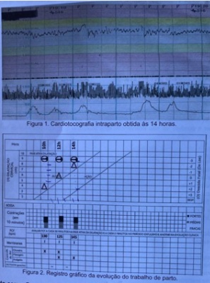
A Evitar uso de analgesia farmacológica de parto.
B Indicar resolução da gestação por parto cesárea.
C Prescrever infusão endovenosa de ocitocina.
D Manter assistência obstétrica habitual.
Questão 52 · Hipotireoidismo na gestação · 4000164271Primigesta, 21 anos, com idade gestacional de 12 semanas, retorna trazendo os exames complementares solicitados em consulta pré-natal anterior. Nega outras queixas clínicas e obstétricas. Antecedentes pessoais: história pregressa de quadro clínico de tireotoxicose há aproximadamente oito meses, evoluindo com adequado controle após prescrição de metimazol. Ao engravidar, a paciente suspendeu o uso de metimazol por conta própria. Exame físico: dentro dos padrões de normalidade para o período gestacional. Exames complementares atuais: hormônio estimulador da tireoide (TSH): 6,33 Ul/ml, tiroxina livre: 0,96 ng/dL e anticorpo antitireoperoxidase (anti-TPO) positivo. Além da monitorização periódica da função tireoidiana, qual a conduta mais adequada nesse caso?
A Prescrever propiltiouracil.
B Reiniciar metimazol.
C Manter sem medicação.
D Iniciar levotiroxina.
Questão 53 · Assistencia ao parto pélvico · Obstetrícia · 4000164270Primigesta, 21 anos, durante o acompanhamento pré-natal de risco habitual, elabora e registra institucionalmente o seu plano de parto, pelo qual manifesta expressa vontade de um parto sem Intervenções, incluindo a recusa de: uterotônicos para indução ou estimulação de trabalho de parto, manipulação vaginal desnecessária, amniotomia, analgesia farmacológica, episiotomia. A equipe assistencial acolhe o plano de parto e promove esclarecimentos e orientações sobre viabilidade de cada tópico abordado. Durante a evolução do trabalho de parto espontâneo a termo, paciente manteve sinais vitais normais, atividade uterina efetiva e vitalidade fetal preservada. Após 6 horas de evolução, com 4 cm de dilatação cervical, ocorre corioamniorrexe espontânea com saída de líquido amniótico claro e com grumos, intensi cando a sintomatologia dolorosa às contrações uterinas. Conforme previsto no plano de parto, foram disponibilizados e aplicados métodos não farmacológicos de alívio de dor, porém a parturiente passa a demandar verbalmente por analgesia farmacológica devido à não melhora da sintomatologia dolorosa. Qual a melhor conduta para esse caso?
A Explicar que a analgesia farmacológica será ofertada após maior progressão da dilatação cervical.
B Condicionar a oferta da analgesia farmacológica à reformulação do plano de parto.
C Atender à solicitação da parturiente e realizar analgesia farmacológica.
D Manter a conduta de não intervenção com analgesia farmacológica prevista no plano de parto.
Questão 54 · Condiloma · Papilomavírus humano HPV · 4000164269Primigesta, 16 anos, 21 semanas, refere lesões na vulva há 30 dias. Na consulta Unidade Básica de Saúde, a avaliação da genitália evidencia as lesões mostradas na figura 1. Qual a melhor conduta para esse caso?

A Ácido tricloacético 80%.
B Podofilotoxina.
C Expectante.
D Imiquimode.
Questão 55 · Toxoplasmose na gestação · 4000164268Primigesta, 23 anos, branca, amasiada, do lar, idade gestacional: 11 semanas. Vem à consulta de retorno pré-natal, na Unidade Básica de Saúde, para checar resultados de exames descritos a seguir: Hemoglobina: 12,6 g/dl; hematócrito: 40%. Sorologia para toxoplasmose (quimioluminescência): IgG reagente e IgM reagente. Qual o melhor manejo para essa gestante no pré-natal de origem?
A Repetir sorologia para toxoplasmose.
B Encaminhar para realização de amniocentese.
C Realizar orientações profiláticas e repetir sorologia.
D Iniciar espiramicina e solicitar teste avidez.
Questão 56 · Trabalho de parto prematuro TPP · Obstetrícia · 4000164267Multigesta (G4PN3), 32 anos, com 35 semanas de gestação, procurou atendimento com contrações uterinas há 6 horas. Sem outras queixas. Refere que na última gestação, seu recém-nascido teve "quadro grave, foi transferido para UTI logo no primeiro dia de vida, precisou de antibiótico por 10 dias e quase morreu". Pré-natal sem intercorrências até o momento, com exames de sangue, culturas e ultrassonogra as normais. Exame físico geral normal, altura uterina 33 cm, 4 contrações moderadas de 40 segundos/10 minutos, boa vitalidade fetal e colo curto, dilatado 4 cm, feto cefálico, com bolsa íntegra. Qual é a alternativa adequada na assistência dessa paciente?
A Condução do parto com sulfato de magnésio endovenoso.
B Assistência ao parto com penicilina cristalina endovenosa.
C Inibição do trabalho de parto com administração definifedipina oral.
D Duas doses de betametasona intramuscular intercaladas por 24 horas.
Questão 57 · Obstetrícia · Hepatites na gestação · 4000164266Primigesta, 16 anos, 16 semanas gestacionais, hígida. Encaminhada da rede básica por ser portadora do vírus da hepatite do tipo B decorrente de transmissão vertical. No serviço terciário confirmou-se carga viral = 912 cópias/mL e exames de função hepática normais. Considerando via de parto e amamentação natural, quais são as condutas mais adequadas para esta paciente?
A Parto cesárea e inibir lactação.
B Parto vaginal e inibir lactação.
C Parto cesárea e amamentação natural.
D Parto vaginal e amamentação natural.
Questão 58 · Predição e prevenção · 4000164265Mulher; 22 anos, G2P1 (1 PN) em seguimento no pré-natal com 33 semanas de gestação pelo ultrassom. Comparece no centro obstétrico com queixa de contrações uterinas há 2 horas, nega perdas vaginais e refere boa movimentação fetal. Ao exame: bom estado geral, pressão arterial: 160 x 110 mmHg. Abdome: gravídico, AU: 32cm, dinâmica: ausente e BCF: 150 bpm. Cardiotocografia: feto ativo. Exames laboratoriais: urina tipo 1: proteinúria ausente, creatinina: 0,7 mg/dL. Hemoglobina: 13,2 g/dL. Plaquetas: 233.000 mm³. Bilirrubina total: 0,6 mg/dL. Transaminase oxalacética (TGO): 26 U/L. Qual o diagnóstico mais adequado neste momento?
A Hipertensão transitória.
B Pré-eclâmpsia.
C Hipertensão arterial crônica.
D Hipertensão gestacional.
Questão 59 · Obstetrícia · Doença hemolítica perinatal DHPN · 4000164264Primigesta, 28 anos, O Rh negativo, triagem de anticorpos: negativo, recebeu imunoglobulina anti-D 300 mcg com 28 semanas. Evoluiu para parto vaginal sem intercorrências com 37 semanas. Exames no puerpério: Tipagem sanguínea da mãe: O Rh negativo. Triagem de anticorpo: positivo. Tipagem sanguínea do recém-nascido: O Rh positivo. Qual a melhor conduta?
A Prescrever imunoglobulina anti-D.
B Considerar diagnóstico de isoimunização Rh.
C Solicitar a titulação de anticorpos.
D Encaminhar ao hematologista.
Questão 60 · Trabalho de parto prematuro TPP · Obstetrícia · 4000164263Mulher, 28 anos, G2P1A0, 1 parto pré-termo anterior espontâneo com 32 semanas sem intercorrências, está em seguimento pré-natal em uso de progesterona via vaginal. Comparece no ambulatório para realizar ultrassom morfológico e medida colo uterino. Ultrassom morfológico sem alterações e avaliação do colo uterino com 2,6 cm de comprimento. Qual a conduta clínica?
A Indicar cerclagem.
B Suspender a progesterona.
C Manter a progesterona.
D Colocar pessário cervical.
Questão 61 · Doença de LeggCalvéPerthes · 4000164262Menino de 5 anos apresenta dor moderada no quadril direito há 2 meses. A família notou diminuição progressiva da atividade da criança e piora dos sintomas neste período. Relata piora da dor aos movimentos e alívio ao repouso. Ao exame físico apresenta claudicação antálgica e limitação moderada dos movimentos do quadril direito pela dor. Não foram identificadas outras regiões dolorosas ou deformidades. Radiografias em anexo. Qual o diagnóstico mais provável?
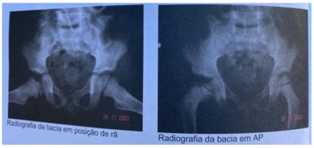
A Artrite séptica do quadril com osteomielite associada.
B Artrite reumatoide juvenil.
C Necrose idiopática da cabeça do fêmur (doença de Legg-Calvé-Perthes).
D Displasia epifisária múltipla.
Questão 62 · Oclusão Arterial Crônica OAC · Cirurgia · 4000164261Homem, 65 anos, apresentava-se com dor em artelhos do pé esquerdo há dois meses com piora progressiva sem fator de melhora com a postura ou posição. Há um mês notou aparecimento de lesão necrótica no hálux esquerdo. Fumante há 40 anos e hipertenso com controle irregular fazendo uso de losartana 50 mg dia. Ao exame clínico apresentava-se com pulso femoral amplo e palpável e ausência de pulsos em região de poplítea, tibial posterior e de artéria pediosa. Lesão gangrenada e seca envolvendo 2/3 do hálux esquerdo com discreta hiperemia de bordos e sem edema. Qual melhor conduta imediata para o caso?
A Antibioticoterapia de amplo espectro e terapia por oxigenioterapia hiperbárica.
B Arteriografia do membro inferior esquerdo para planejamento de revascularização.
C Amputação primária do hálux seguido de anticoagulação plena.
D Dupla antiagregação plaquetária seguido de exame de ultrassonografia vascular arterial e venosa.
Questão 63 · Isquemia Colônica · Cirurgia · 4000164260Homem de 65 anos dá entrada com quadro de rotura de aneurisma de aorta abdominal e é operado na emergência por correção aberta. Durante o período intra operatório apresentou sangramento de grande volume, necessitando de transfusão de hemoderivados e permanecendo hipotenso a maior parte do tempo. A correção cirúrgica foi realizada com clampagem infra-renal utilizando-se prótese de poliéster do tipo bifurcada com anastomose proximal em aorta abdominal infra-renal e anastomoses distais nas artérias femorais. Paciente saiu estável do procedimento com aminas vasoativas em dose baixa. Foi extubado no segundo pós-operatório na unidade de terapia intensiva e apresentava boa evolução clínica pelo porte da cirurgia. No quarto pós-operatório iniciou queixa de dor abdominal, principalmente no andar inferior, com piora dos parâmetros hemodinâmicos. Ao exame físico, o abdome encontrava-se distendido, com dor difusa à palpação e descompressão brusca positiva inespecí ca e ainda sem ruídos hidro aéreos. Os exames laboratoriais seguem em anexo (figura): Qual o provável diagnóstico?
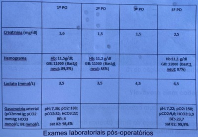
A Colecistite alitiásica.
B Sepse de origem abdominal.
C Hemorragia.
D Colite isquêmica.
Revisar: possível letra faltando em enunciado
Questão 64 · Aneurisma de Aorta Abdominal · Cirurgia · 4000164259Homem, 68 anos, com dor abdominal tipo cólica em anco direito há um dia, sem melhora com analgésicos. Foi encaminhado, em caráter de emergência, ao hospital terciário (pronto socorro) com laudo de ultrassom mostrando aneurisma de aorta abdominal fusiforme de cerca de 3,8 cm no maior diâmetro. No momento sua pressão arterial estava em 160 x 90 mmHg e FC de 92 bpm. Tomogra a mostrou mesmos achados do ultrassom e aneurisma de 2,0 cm de colo proximal infra-renal e com a informação adicional de não haver extravasamento de contraste da aorta com presença de duas imagens cálcicas de cerca de 4 mm cada uma em pelve renal à direita. Qual a melhor conduta para este caso em referência ao aneurisma de aorta?
A Controle clínico da pressão arterial e posterior cirurgia convencional do aneurisma.
B Acompanhamento clínico ambulatorial com ultrassom periódico do aneurisma.
C Tratamento endovascular do aneurisma de aorta abdominal.
D Angiorressonância para melhor avaliação da espessura da aorta e possível indicação terapêutica.
Questão 65 · Diagnóstico · Estadiamento · 4000164258Mulher, 73 anos, tabagista 55 anos/maço, procura pneumologista com queixa de tosse e hemoptoicos há 4 semanas. Tomogra a de tórax mostra lesão espiculada periférica de 4,0 cm no lobo superior direito. PET-TC (tomogra a por emissão de pósitrons) apresenta lesão pulmonar com captação aumentada (SUV = 7) e em linfonodos mediastinais (SUV = 6) e hilares à direita (SUV = 4). A avaliação funcional pulmonar mostrou espirometria com VEF1 = 2,3L compatível com ressecção até bilobectomia. Qual o próximo passo mais adequado no manejo deste paciente?

A Pneumonectomia direita e broncoplastia (margem de segurança).
B Preparo para cirurgia com intenção curativa com programação de segmentectomia apical direita e esvaziamento mediastinal.
C Realizar amostragem dos linfonodos mediastinais e hilares por EBUS (
D Encaminhar para avaliação oncológica clínica para protocolo de neoadjuvância.
Questão 66 · Estenose Carotídea · Cirurgia · 4000164257Homem de 71 anos com história de hipertensão arterial sistêmica, diabetes mellitus e tabagismo sem antecedentes de acidente vascular encefálico, acidente isquêmico transitório ou outras queixas cerebrovasculares ou cardíacas. Está em seguimento ambulatorial com médico generalista que descobriu sopro cervical esquerdo, investigado com ultrassonogra a com Doppler e angiotomogra a, sendo diagnosticada estenose de carótida interna esquerda de 75%. Ainda, de antecedentes mórbidos, recentemente foi diagnosticado com adenocarcinoma esofágico estágio IV B. Qual a conduta em relação à estenose carotídea?
A Endarterectomia de carótida.
B Angioplastia com stent em carótida.
C Ressonância magnética encefálica para investigar infartos lacunares.
D Tratamento clínico otimizado.
Questão 67 · Neurologia · PréRequisitos · Exame Clínico · 4000164253Criança de 2 meses, admitida após traumatismo crânio-encefálico por acidente automobilístico (capotamento), com duas mortes na cena. Foi submetido a drenagem de hematoma subdural e craniectomia descompressiva. No segundo dia pós- operatório, encontra-se intubada, com escala de coma de Glasgow de 3, midríase xa bilateral e ausência bilateralmente dos reflexos córneo-palpebrais, óculo-cefálicos, e vestíbulo-calóricos, além de ausência do reflexo de tosse. Sua pressão arterial é de 70 x 52 mmHg, sua temperatura é de 37°C e seus exames de sangue mostram eletrólitos, função renal e hepática dentro dos valores normais. Retirados os sedativos (midazolam e fentanil) há 20 horas. Com relação ao diagnóstico de morte encefálica (ME), qual das condutas abaixo é a mais adequada neste momento?
A Comunicar a família que será aberto protocolo de ME.
B Realizar angiografia cerebral.
C Iniciar a primeira prova de ME após 4 horas.
D Realizar teste de apneia.
Questão 68 · Tratamento · Apresentação clínica · 4000164252Mulher de 62 anos, trabalhadora rural, procurou unidade básica de saúde queixando-se de lesão cutânea em nariz ( figura), com crescimento progressivo nos últimos 6 meses. Baseado na principal hipótese diagnóstica, qual o tratamento mais indicado?

A Terapia fotodinâmica.
B Curetagem e eletrocoagulação.
C Radioterapia superficial.
D Exérese com margens de segurança.
Questão 69 · Ortopedia · Síndrome de BrownSequard · Síndromes Medulares · 4000164249Homem de 21 anos, admitido após ferimento por arma de fogo em região cervical direita. Ao exame físico, apresentava via aérea pérvia, estando hemodinamicamente estável com pulso periférico presente e boa perfusão. Ao exame neurológico, apresentava escala de coma de Glasgow de 15, pupilas isocóricas, hemiparesia à direita grau 2, sinal de Babinski à direita. perda da sensibilidade proprioceptiva à direita e perda da sensibilidade termoalgésica à esquerda. Qual é o diagnóstico sindrômico?
A Lesão da medula anterior.
B Hemissecção medular.
C Lesão central da medula.
D Lesão da medula posterior.
Questão 70 · Tratamento e conduta · 4000164248Mulher de 56 anos notou surgimento de lesão escurecida e irregular em antebraço direito. A biópsia da lesão identi cou melanoma nodular, com Breslow de 0,5 milímetro, sem regressão, sem invasão angiolinfática, sem mitoses e com ulceração. Ao exame físico: cicatriz da biópsia em antebraço direito em bom aspecto e sem sinais de recidiva local, cadeia linfática axilar direita sem massas ou adenomegalias. Os exames radiológicos não mostraram sinais de metástase em outros órgãos. Que condutas devem ser implementadas?
A Ampliação de margens de 2 cm e linfadenectomia axilar ipsilateral.
B Ampliação de margens de 2 cm e biópsia de linfonodo sentinela.
C Ampliação de margens de 1 cm e biópsia de linfonodo sentinela.
D Ampliação de margens de 1cm e linfadenectomia axilar ipsilateral.
Questão 71 · Cirurgia · 4000164247Mulher 45 anos, do lar, vem para atendimento em uma unidade de pronto atendimento, com ferimento em orelha esquerda causada por mordedura de cão há cerca de 48 horas. Relata que não compareceu antes por estar sem acessibilidade a um serviço de saúde. Na figura em anexo nota-se secreção e exposição de cartilagem no leito da lesão. Qual a melhor conduta?
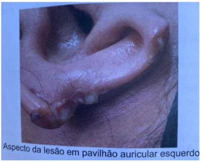
A Curativos diários, antibioticoterapia e fechamento primário retardado.
B Curativo diários, antibioticoterapia e cicatrização por segunda intenção.
C Debridamento, sutura das bordas e antibioticoterapia.
D Referenciar o paciente para atendimento especializado hospitalar.
Questão 72 · Fratura do rádio distal · Conceitos Básicos do Trauma Ortopédico · Diagnóstico · 4000164246Homem de 52 anos sofreu fratura da região distal do rádio que foi tratada com imobilização gessada há 12 horas. Retornou ao pronto socorro com forte dor no punho que não melhorava com analgesia. Ao exame físico apresentava edema dos dedos e dor forte ao movimentá-los. Perfusão dos dedos presente com enchimento capilar lentificado. Qual a melhor conduta?
A Encaminhar para cirurgia para realização de osteossíntese da fratura e liberação dos compartimentos.
B Retirada imediata da imobilização, confecção de imobilização provisória, observação da evolução.
C Encaminhar para cirurgia para realização de osteossíntese da fratura sem necessidade de fasciotomia.
D Iniciar uso imediato de opioides e elevar o membro sem interferir no tratamento da fratura.
Questão 73 · Estenose Hipertróf ica do Piloro · Cirurgia · 4000164245Menina de 45 dias de vida, previamente saudável, amamentação com leite materno exclusivo, com história de vômitos logo após as mamadas, com inicio há 1 semana, de conteúdo de leite talhado. A mãe relata que tem percebido que a criança vomita praticamente todo leite ingerido nos últimos 2 dias e que não está ganhando peso. A criança evacua diariamente, mas em pequena quantidade. O pediatra orientou medidas posturais e dietéticas e prescreveu domperidona, sem resposta. Qual o diagnóstico mais provável?
A Estenose hipertrófica do piloro.
B Alergia a proteína do leite de vaca.
C Má rotação intestinal.
D Refluxo gastroesofágico.
Questão 74 · Nervosas · 4000164244Homem de 55 anos, pedreiro, compareceu a consulta com queixa de rouquidão há 6 meses. Refere tabagismo de 60 anos- maço, e ingere 50 ml de bebida alcoólica destilada, diariamente, há 20 anos. Informa que a disfonia se iniciou após ser submetido a cirurgia para remoção de carcinoma de tireoide há 8 meses. Ao exame do pescoço, não apresenta massas cervicais palpáveis e a laringoscopia apresenta imobilidade da prega vocal esquerda em posição paramediana. Qual o diagnóstico mais provável?
A Recidiva do carcinoma de tireoide.
B Luxação de cartilagem aritenoide.
C Carcinoma inicial de laringe.
D Lesão do nervo laríngeo inferior.
Questão 75 · Investigação · Hemorragia Subaracnoidea HSA · Neurologia · 4000164238Homem de 50 anos, previamente hígido, com quadro de cefaleia súbita associada a vômitos e perda da consciência transitória durante realização de atividade física. Acompanhante relata não ter havido traumatismo craniano. Deu entrada no Pronto Atendimento consciente e lúcido, sem dé cits sensitivo-motores, com rigidez de nuca e presença do sinal de Brudzinski. Seu exame de tomografia computadorizada inicial sem contraste encontra-se em anexo. Qual a etiologia mais provável?
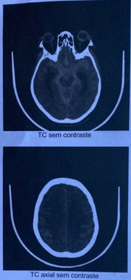
A Ruptura de malformação artério-venosa intracraniana.
B Hipertensão arterial (pico hipertensivo).
C Ruptura de aneurisma intracraniano.
D Vasculite do sistema nervoso central.
Questão 76 · Complicações · Cirurgia · 4000164237Homem de 64 anos foi submetido a revascularização do miocárdio, cujo acesso cirúrgico foi por meio de esternotomia mediana. Após 25 dias de cirurgia, iniciou drenagem purulenta e deiscência da ferida operatória. O tratamento inicial foi feito com desbridamento dos tecidos desvitalizados e terapia por pressão negativa. Após três ciclos de terapia, a ferida cirúrgica encontra-se como mostrado na figura. Qual o melhor tratamento subsequente?

A Cicatrização por segunda intenção.
B Enxerto de pele total.
C Rotação de retalho miocutâneo.
D Fechamento primário da pele.
Questão 77 · Atendimento Inicial às Vítimas de Queimadura · Cirurgia · 4000164234Homem de 42 anos sofreu queimaduras por combustão de álcool em tronco e membros inferiores. Foi trazido ao pronto- socorro de hospital secundário, onde recebeu o atendimento inicial. Ao exame: consciente e orientado, Glasgow 15, ventilação com murmúrio vesicular presente a simétrico, saturação de oxigênio em ar ambiente de 97%, frequência respiratória de 20 ipm, frequência cardíaca de 98 bpm, pressão arterial de 100 x 60 mmHg, queimaduras de segundo e terceiro graus em abdome, coxa direita e coxa esquerda. A equipe médica iniciou a reposição volêmica com cristaloides e realizou analgesia endovenosa. Qual das condutas abaixo também deve ser implementada no atendimento inicial desse paciente?
A Checagem da vacinação antitetânica.
B Cateter nasal com oxigênio a 100%.
C Desbridamento das queimaduras de terceiro grau.
D Monitorização cardíaca em terapia intensiva.
Questão 78 · Doença degenerativa discal e hérnia discal · 4000164230Homem de 45 anos, sem comorbidades prévias, queixa-se de lombalgia de início súbito com irradiação para membro inferior direito há 2 dias, iniciado após levantar armário em casa para limpeza. Utilizou paracetamol por conta própria, com melhora parcial. Ao exame físico não apresenta alterações a não ser por dor no membro citado, principalmente quando elevado em posição reta acima de 40 graus. Realizou o exame de ressonância magnética em anexo. Qual o tratamento mais indicado para este paciente?
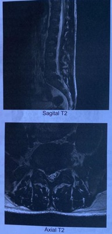
A Cirurgia-microdiscectomia.
B Conservador (analgesia).
C Uso de colete lombar (de Putti).
D Infiltração radicular com glicocorticoide.
Questão 79 · Persistência do Conduto Peritôniovaginal Patente · Cirurgia · 4000164229Menino de 1 ano e 2 meses de idade, com história de abaulamento inguinal esquerdo, indolor, notado pela mãe há 20 dias, durante o banho. Na palpação, nota-se tumoração tensa, não dolorosa, irredutível, em canal inguinal esquerdo. Qual o provável diagnóstico?
A Hidrocele comunicante.
B Adenomegalia reacional.
C Cisto de cordão espermático.
D Hérnia inguinal.
Questão 80 · Hemotórax · Cirurgia · 4000164228Homem, 18 anos, vítima de trauma torácico fechado (colisão carro com ônibus). Atendido em Centro de Trauma, apresentava fratura costal à direita. Realizado drenagem pleural fechada por hemo-pneumotórax ( figura A). Boa evolução com resolução e expansão pulmonar, dreno pleural retirado após 48 horas e seguida de alta hospitalar. Retorna ao serviço de emergência após 14 dias da alta com queixa de dor pleurítica à direita e picos febris há 2 dias. Encontra-se hemodinamicamente estável e eupnéico. Submetido a tomografia de tórax (figuras B e C). Qual a conduta terapêutica mais adequada?
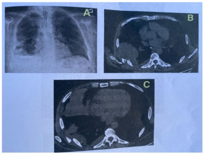
A Passagem de dreno pleural tipo "pigtail" para uso de trombolíticos, irrigação contínua por 48 horas.
B Toracotomia póstero-lateral com pleurectomia parietal para controle de sangramento.
C Dreno pleural calibroso (36F), uso de irrigação contínua e sistema de aspiração pleural reduzida
D Videotoracoscopia ou VATS (
Questão 81 · Imunidade de rebanho · Vacina contra hepatite B · Vacina contra f ebre amarela · 4000164227Você trabalha como médico em uma Unidade de Saúde da Família e atende um paciente de 45 anos, lavrador, hígido, que foi orientado a atualizar sua carteira vacinal pelo agente comunitário de saúde, mas se recusou a fazê-lo. O paciente recusou a aplicação das vacinas contra hepatite B e febre amarela, alegando que sua esposa e lhos são vacinados contra essas doenças e que por isso ele se sente protegido contra as mesmas. Assinale entre as alternativas abaixo aquela que indica a melhor orientação a ser oferecida a esse paciente.
A Explicar que a vacinação de sua família não lhe confere proteção alguma contra hepatite B, e nem contra febre amarela silvestre. Recomendar a aplicação de ambas as vacinas.
B Explicar que a vacinação de sua família não lhe confere proteção alguma contra hepatite B, mas sim contra a febre amarela silvestre. Recomendar a aplicação da vacina contra hepatite B.
C Explicar que a vacinação de sua família lhe confere parcialmente alguma proteção contra hepatite B e nenhuma contra febre amarela silvestre. Recomendar a aplicação de ambas as vacinas.
D Explicar que a vacinação de sua família lhe confere parcialmente alguma proteção contra hepatite B e parcialmente contra febre amarela silvestre. Recomendar a aplicação de ambas as vacinas.
Questão 82 · Dermatite de f raldas · 4000164226A enfermeira da saúde da família do bairro avaliou um bebê de 2 meses e meio de idade que foi levado à unidade para consulta de puericultura. Durante conversa, a mãe relatou que a criança, nos últimos dias, estava chorando muito, mais irritada em algumas horas do dia. Negava febre, perda de peso ou alteração do apetite. Ao retirar a fralda para examinar a criança, a enfermeira percebeu área de pele com eritema importante e áreas de abrasão, acometendo o períneo, raiz das coxas, parte das nádegas, se estendendo até a região perianal. O médico foi chamado, avaliou a criança e orientou o tratamento, medidas de cuidado e prevenção. Qual o melhor tratamento medicamentoso para o quadro desta criança?
A Antibiótico tópico.
B Corticosteroide tópico.
C Antifúngico tópico.
D Dexpantenol tópico.
Questão 83 · Classif icação · Tratamento · 4000164225Paciente de 35 anos, procura a Unidade de Saúde da Família com queixa de uma mancha esbranquiçada na perna direita. O paciente nega dores, prurido ou outras queixas em relação à mancha, que percebeu há cerca de 2 anos e vem aumentando de tamanho, lentamente. Nega perda de força ou parestesias no membro afetado. Paciente nega tabagismo, uso de bebida alcoólica, de medicamentos ou de qualquer problema de saúde. Ao exame, o médico de família e comunidade (MFC) percebe a mancha hipocrômica, de cerca de 6 cm de diâmetro, com perda de sensibilidade tátil, térmica e dolorosa. Também percebeu o nervo bular à direita mais espessado. Não encontrou outras alterações de pele ou outros nervos espessados. Com esses achados, a melhor conduta do MFC é:
A Iniciar tratamento com rifampicina, clofazimina e dapsona, com duração de 6 meses.
B Iniciar tratamento com rifampicina e clofazimina, com duração de 12 meses.
C Encaminhar o paciente para confirmação diagnóstica em ambulatório especializado.
D Iniciar tratamento com rifampicina e dapsona, com duração de 6 meses.
Questão 84 · Apresentação Clínica · 4000164224Você trabalha como médico em uma Unidade de Saúde da Família e atende um jovem de 16 anos, previamente hígido, que procura atendimento queixando-se de odinofagia e febre há 5 dias. Há 3 dias, procurou o serviço de pronto-atendimento, onde foi atendido por um médico que lhe prescreveu amoxicilina + clavulanato (500/125 mg) 1 cp 8/8h por 1 semana e dipirona, se necessário. Desde então, o rapaz notou piora dos sintomas e o aparecimento de lesões avermelhadas no tronco. Fotos de sua orofaringe e tronco no dia da consulta estão ilustradas abaixo. Diante desse quadro clínico, assinale a alternativa que contém o diagnóstico mais provável e a conduta mais apropriada para o caso.
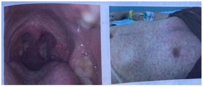
A Abscesso periamigdaliano. Manter amoxicilina + clavulanato e encaminhar o paciente para drenagem cirúrgica imediata.
B Herpangina, farmacodermia à amoxicilina + clavulanato. Trocar amoxicilina + clavulanato por clindamicina 600 mg (vo) 8/8h.
C Amigdalite bacteriana, falha no tratamento antimicrobiano. Trocar amoxicilina + clavulanato por ceftriaxona 2g (EV) ou (IM) 1 vez ao dia.
D Mononucleose infecciosa. Suspender amoxicilina + clavulanato e intensificar analgesia com nimesulide 100 mg (vo) 12/12h.
Questão 85 · Atributos gerais da Atenção Primária à Saúde APS · Política Nacional de Atenção Básica PNAB · 4000164223Na discussão semanal da equipe de saúde da família, a preocupação em relação ao dimensionamento inadequado de agentes comunitários de saúde (ACS) para a cobertura de toda a população cadastrada na Unidade de Saúde da Família (USF) foi externada pelos membros da equipe de saúde. O número ideal de ACS previsto para a USF, de acordo com a Política Nacional de Atenção Básica (PNAB) era de seis (6), e naquele momento, a equipe contava com apenas três (3). Essa situação vivenciada pela equipe da USF prejudica, principalmente, que atributo da atenção primária à saúde?
A Participação comunitária.
B Coordenação do cuidado.
C Longitudinalidade do cuidado.
D Atenção ao primeiro contato.
Questão 86 · Abordagem Familiar · 4000164222Durante a reunião de discussão de família, a agente comunitária de saúde (ACS) informou que uma nova família havia se mudado para o território da Unidade de Saúde da Família (USF). Por meio da visita domiciliar para o cadastramento, a ACS identi cou que no domicílio residia um casal jovem (homem 35 anos e mulher 33 anos), com duas crianças (um menino de 7 anos e uma menina de 4 anos). A mulher estava desempregada, o marido trabalhava em uma indústria de bebidas durante o dia, o menino estava frequentando a escola e a menina cava em casa com a mãe, pois não havia vaga na creche do bairro. A mulher informou também que ela e o marido não eram os pais biológicos das crianças. Considerando as estruturas familiares, a equipe pode classificar esta família como:
A Extensa.
B Composta.
C Nuclear.
D Funcional.
Questão 87 · Tratamento da Hipertensão arterial · Tratamento medicamentoso · 4000164221Paciente com 49 anos do sexo masculino em consulta para avaliação de exames e acompanhamento de pressão arterial alterada, tem antecedente de gota. Na consulta, verificou-se pressão arterial de 152 x 90 mmHg, além de IMC de 38. Resultados de exames: glicemia de jejum: 88 mg/dl, colesterol total: 270 mg/dl, HDL colesterol: 94 mg/dl, triglicérides: 197 mg/dl, creatinina: 1,3 mg/dl, sódio: 142 mEq/L potássio: 4,7 mEq/L. ácido úrico: 9.2 mg/dl, urina tipo 1: sem alterações significativas. Valores de referência: Glicemia: 70-99 mg/dl Colesterol total: < 200 mg/dl HDL Colesterol: 40-60 mg/d Triglicérides: <150 mg/dl Creatinina: < 1,3 mg/dl Sódio: 135-145 mEq/L Potássio: 3,5-5,5 mEq/L Ácido úrico: 4,0-7,0 mg/dl Con rmado o diagnóstico de hipertensão arterial e com base nas características clínicas e resultados dos exames, qual a classe de anti-hipertensivo você indicaria preferencialmente?
A Inibidor da enzima conversora de angiotensina (IECA).
B Bloqueador de canal de cálcio diidropiridínico.
C Beta-bloqueador não-seletivo.
D Diurético tiazídico.
Questão 88 · Avaliação f uncional e ultrassonográf ica da glândula tireoide · Diagnóstico etiológico da tireotoxicose · 4000164220Paciente do sexo feminino, 20 anos, comparece à Unidade de Saúde da Família (USF) para consulta, com história de há 2 meses ter iniciado quadro de palpitações, irritabilidade e fraqueza. Em registro anterior de prontuário, observou-se ainda, perda ponderal de 4 Kg, no período. Nega uso de medicações. Ao exame: peso 52 Kg, FC: 114 bpm. PA: 110 x 70 mmHg. FR 14 ipm. Pele: quente e úmida. ACV: Ritmo Regular, com 2 Bulhas normofonéticas, sem sopros. AR: MV Simétrico, sem RA. Tireoide: palpável, sem aumento de tamanho e sem nódulos palpáveis. Qual a melhor conduta inicial a ser realizada no contexto da atenção primária à saúde?
A Solicitar anticorpos anti-receptores de TSH (TRAb).
B Solicitar ultrassom de tireoide, TSH e T4 livre.
C Solicitar TSH, T4 livre e T3.
D Solicitar TSH, cintilografia de tireoide com captação.
Questão 89 · Medicina Preventiva · 4000164219Gestante, 30 anos, G2P1A0C1, IG 1° USC 26 semanas. Vinha realizando o pré-natal em Unidade de Saúde da Família (USF) quando foi condenada a cumprimento definitivo de pena, com reclusão em regime fechado. Além do parto hospitalar, a gestante terá direito:
A Terminar pré-natal em estabelecimento prisional. Período de amamentação de 6 meses em prisão domiciliar.
B Terminar pré-natal em USF. Retorno para estabelecimento prisional após o parto.
C Terminar pré-natal em unidade prisional. Período de amamentação em berçário de unidade prisional.
D Terminar pré-natal em USF. Período de amamentação de 6 meses em prisão domiciliar.
Questão 90 · Dependência de Tabaco · 4000164218Paciente de 46 anos procura seu médico de família e comunidade (MFC). O paciente tem antecedentes pessoais de hipertensão arterial sistêmica (controlada com medicamentos) e de gota. Apresentou quadro de epilepsia dos 2 aos 15 anos de idade, com a última crise convulsiva aos 12 anos. Está em tratamento de úlcera gástrica, diagnosticada há 1 semana. Faz uso crônico de losartana (100 mg ao dia), alopurinol (300 mg ao dia) e em uso recente de claritromicina, amoxicilina e omeprazol. É tabagista desde os 18 anos de idade. Fuma cerca de 20 cigarros ao dia. Fuma o primeiro cigarro 20 minutos após acordar, pela manhã. Tem sintomas de ssura quando ca mais de 2 horas sem fumar. Não tem queixas respiratórias. Nega uso de bebidas alcoólicas. O paciente informa que, devido à crise gerada pela pandemia de Covid-19, foi demitido há 6 meses e não conseguiu outro emprego, até o momento. Também está passando por di culdades no relacionamento com a esposa. Há cerca de 2 meses vem apresentando sintomas de tristeza, anedonia, di culdades de sono e ganho de peso. Durante a entrevista o MFC diagnosticou um episódio depressivo maior e a pontuação de Fagerstrom foi 8. Também relata que deseja cessar o tabagismo. O exame físico do paciente não mostrou qualquer alteração importante. Diante do quadro, o MFC decide iniciar intervenção psicoterapêutica e tratamento farmacológico com mais de uma droga. A prescrição mais indicada para este quadro seria:
A Adesivo definicotina e nortriptilina.
B Adesivo definicotina e goma definicotina.
C Goma definicotina e bupropiona.
D Adesivo definicotina e bupropiona.
Revisar: possível letra faltando em enunciado
Questão 91 · Medicina Preventiva · 4000164217A figura abaixo foi extraída de um artigo cientí co que aborda a efetividade da aplicação em massa da vacina CoronaVac para a prevenção de Covid-19, no Chile. Considerando a efetividade da aplicação de duas doses da vacina estimada pela análise estrati cada em 63,7%, isso significa que:
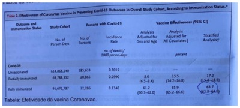
A 63,7% das pessoas vacinadas foram efetivamente protegidas e não desenvolveram Covid-19.
B 63,7% das pessoas vacinadas produziram anticorpos (soro converteram) contra Covid-19.
C A prevalência de Covid-19 foi 63,7% menor nas pessoas vacinadas que nas não vacinadas.
D A incidência de Covid-19 foi 63,7% menor nas pessoas vacinadas que nas não vacinadas.
Revisar: possível letra faltando em enunciado
Questão 92 · Atenção Primária à Saúde APS no Brasil · 4000164216Durante uma visita de estudantes do primeiro ano de medicina à uma Unidade de Saúde da Família (USF), o professor apresentou a estrutura da unidade (ambiência, equipamentos, recursos humanos) e explicou que os serviços de saúde no Sistema Único de Saúde (SUS), estão organizados em uma rede de atenção à saúde (RAS), composta por pontos assistenciais de densidades tecnológicas distintas que atendem condições de saúde de diferentes complexidades. Também comentou que a atenção primária à saúde (APS) se constitui a porta preferencial de acesso dos usuários à RAS e que a USF, apesar de não dispor de muitos equipamentos, apresentava um bom vínculo com a comunidade, uma equipe multiprofissional bem integrada e uma taxa de resolutividade próxima à 90%. Após a visita à USF e baseados na explicação do professor sobre a organização da RAS os estudantes concluíram que:
A A atenção secundária apresenta baixa densidade tecnológica e elevado grau de tecnologia leve-dura.
B A atenção terciária apresenta alta densidade tecnológica e elevado grau de tecnologia leve.
C A atenção primária apresenta baixa densidade tecnológica e elevado grau de tecnologia dura.
D A atenção primária apresenta baixa densidade tecnológica e elevado grau de tecnologia leve.
Questão 93 · Prevenção · 4000164215Uma criança de oito anos de idade é trazida à Unidade de Saúde da Familia (USF) com história de ter sido atacada por um porco doméstico, ao adentrar o interior de um chiqueiro, na propriedade rural onde vive com seus pais. O exame físico revela lesão única e super cial na panturrilha direita. A família informa que a criança nunca havia recebido vacinas antirrábicas anteriormente. Com vistas à pro laxia antirrábica, a conduta a ser adotada neste caso envolve limpeza criteriosa e desinfecção do local atingido, acompanhada de:
A Quatro doses de vacina, sem uso de soro.
B Três doses de vacina e observação do animal.
C Quatro doses de vacina e uma dose de soro.
D Apenas acompanhamento do animal.
Questão 94 · Prevenção · 4000164214A figura abaixo ilustra as indicações principais para higienização das mãos pelos pro ssionais da saúde segundo a Organização Mundial da Saúde (OMS). Com base na figura e nas recomendações da OMS sobre higienização de mãos, assinale a alternativa correta.
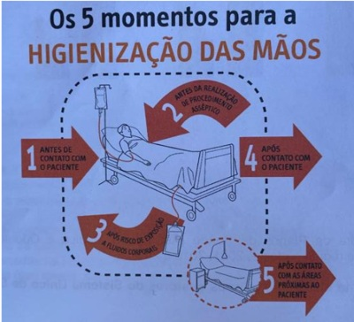
A A indicação 5 pode ser dispensada no caso de o paciente estar em isolamento de contato e o profissional tiver usado luvas de procedimento.
B Na indicação 4, o profissional deve preferencialmente lavar as mãos com água e sabonete liquido, ao invés de aplicar formulação alcóolica.
C A indicação 1 pode ser dispensada no caso de o paciente estar em isolamento de contato e o profissional for calçar luvas de procedimento.
D Na indicação 2, o profissional deve realizar a higienização das mãos, mesmo que já a tenha feito antes do primeiro contato com o paciente.
Questão 95 · Imunodef iciências primárias · 4000164213O médico de família e comunidade está preocupado com uma criança de 2 anos que se mudou para sua área recentemente. Na consulta passada a mãe contou que, nos últimos 12 meses, a criança apresentou vários episódios de sinusite, otite e pneumonia, todos necessitando de antibióticos por tempo longo e que, no momento, vem apresentando diarreia difícil de controlar. Informou que a criança chia o peito às vezes e tem uma alergia na pele (eczema), desde os primeiros meses de vida. Relatou também que a criança precisou tomar, por vários meses, um medicamento porque aos 7 meses de idade apareceu um caroço na axila direita que supurou. A mãe disse ainda que, quando era pequena (a mãe), perdeu um irmão alguns dias após nascer e que há alguns anos perdeu uma sobrinha, mas não sabe dizer a causa. Qual a principal suspeita diagnóstica para o quadro desta criança?
A Alergia à proteína do leite de vaca.
B Erro inato da imunidade.
C Intolerância à lactose.
D Parasitose intestinal.
Questão 96 · Saúde Suplementar · 4000164212Na reunião do Conselho Nacional de Secretários Estaduais de Saúde (CONASEMS), uma das pautas foi a importância de se analisar a tendência de cobertura da população por planos de saúde (bene ciários dos planos de saúde). O gestor estadual, que representou a região sudeste do Brasil, apresentou alguns dados sobre a cobertura de assistência médica e odontológica para os quatro estados da região, em três períodos distintos (Gráfico 1). Grá co 1. Cobertura de Planos de Saúde (assistência médica e odontológica exclusiva) segundo estados da região sudeste, 2021, Grá co 1. Cobertura de Planos de Saúde (Assistência Médica e Odontológica Exclusiva) segundo estados da região sudeste, 2021, 2016 e 2011 A importância desta discussão para os gestores do Sistema Único de Saúde (SUS) está relacionada:

A A análise da abrangência e do impacto do SUS no atendimento das necessidades de saúde da população.
B Ao aumento da oferta de serviços médicos e odontológicos para atender às necessidades de saúde da população.
C A desobrigação de atendimento das necessidades de saúde da população coberta pelos planos de saúde (beneficiários).
D A diminuição do ressarcimento ao SUS dos serviços prestados aos beneficiários dos planos de saúde.
Revisar: possível letra faltando em enunciado
Questão 97 · Medicina Preventiva · Cardiologia · 4000164211O gráfico abaixo, extraído de um artigo cientí co (N Engl J Med 2019; 380:263-73), ilustra a elevação da temperatura média da superfície terrestre nos últimos 170 anos, segundo diferentes medições. Para a Organização Mundial da Saúde, esse fenômeno é a maior ameaça atual à saúde pública global. Considerando que o Brasil é atualmente o 6º maior emissor de gases de efeito estufa, qual seria a medida mais efetiva a ser tomada pelo país visando minimizar sua contribuição para o aquecimento global?
A Reduzir o uso de gasolina, aumentando a produção de etanol a partir da cana de açúcar.
B Reduzir a queima de carvão mineral, investindo na produção de energia eólica.
C Reduzir as queimadas na Floresta Amazônica, que constitui grande reserva de carbono.
D Reduzir o uso de óleo diesel, aumentando a eficiência do transporte de cargas.
Revisar: possível letra faltando em enunciado
Questão 98 · Pediatria · Asma · 4000164210A paciente comparece à unidade de saúde da família com seu lho de 7 anos. Informa que a criança foi diagnosticada com asma há 4 meses, quando iniciou o tratamento com budesonida spray oral, em uso até o momento. Relata que a criança estava bem até há 2 dias quando começou a apresentar sibilos e tosse seca principalmente à noite e pela manhã, ao acordar. Nega dispneia e não sabe informar sobre a ocorrência de febre. Durante a consulta, a médica colheu a história clínica da criança, realizou o exame físico completo e mediu o pico de uxo expiratório (PFE), constatando que a asma não estava controlada. Com base nas informações descritas acima, qual a conduta inicial mais adequada para o caso desta criança?
A Prescrever corticosteroide por via oral por 5 dias e, se não houver melhora, encaminhar a criança ao especialista para avaliação do caso.
B Iniciar broncodilatador de ação-rápida inalatório por 5 dias e, se não houver melhora, encaminhar a criança ao especialista para avaliação e conduta.
C Verificar presença de infecção respiratória atual, a adesão aos medicamentos, a técnica de uso do dispositivo inalatório e o cuidado ambiental.
D Encaminhar a criança ao especialista para avaliação do caso, realização de exames específicos e ajuste do esquema terapêutico para asma.
Questão 99 · Prevenção · 4000164209Paciente masculino, 52 anos, sedentário, recebendo atendimento de rotina com diagnóstico de hipertensão arterial. Ao exame físico apresenta-se com IMC: 42 kg/m² e pressão arterial de 132 x 82 mmHg e com os seguintes resultados de exames laboratoriais: glicemia: 112 mg/dl, teste de tolerância à glicose 75g (GTT 75): 112/190, colesterol total: 198 mg/dl, HDL colesterol: 49mg/dl, triglicérides 270 mg/dl, creatinina: 0,8 mg/dl, TGO: 28 mg/dl, TGP: 37 mg/dl, urina tipo 1: sem alterações. Além das orientações de cuidados não farmacológicos como orientação dietética e atividade física regular, que medicação seria mais adequada à condição de saúde do paciente?
A Sitagliptina (inibidor da DDP4)
B Dapaglifozina (inibidor do SGLT2).
C Glibenclamida (sulfoniureia).
D Metformina (biguanida).
Questão 100 · Vaginose bacteriana · Vulvovaginites · Ginecologia · 4000164208Paciente feminina, 27 anos, com queixa de corrimento vaginal há 2 meses e odor desagradável. Ao exame físico especular você coleta exame de papanicolau e observa moderada quantidade de corrimento em fundo de saco vaginal de coloração acinzentada, sem alterações em paredes vaginais e colo de útero. Wi teste realizado e foi positivo; no exame à fresco observou-se a presença de Diante desse quadro clínico qual a melhor conduta, além de orientar a prevenção de infecções sexualmente transmissíveis (IST) e discutir sobre métodos contraceptivos? Respostas: 1 12 23 34 45 56 67 78 89 100
A Prescrever metronidazol 500 mg de 12/12h, uma semana.
B Prescrever ciprofloxacina 500 mg (dose única), doxicilina 10 mg, 12/12h, 7 dias.
C Prescrever fluconazol 150 mg em dose única.
D Prescrever dexametasona, apresentação creme vaginal.